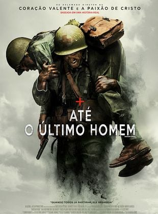
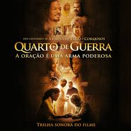
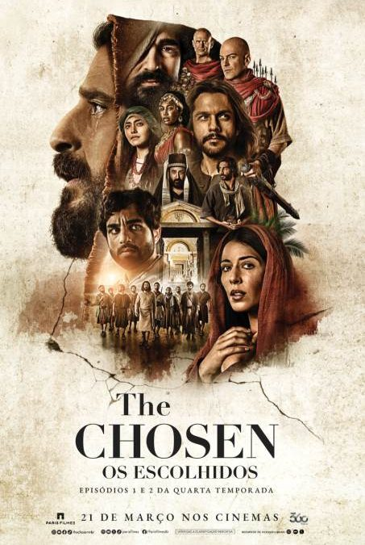
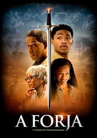
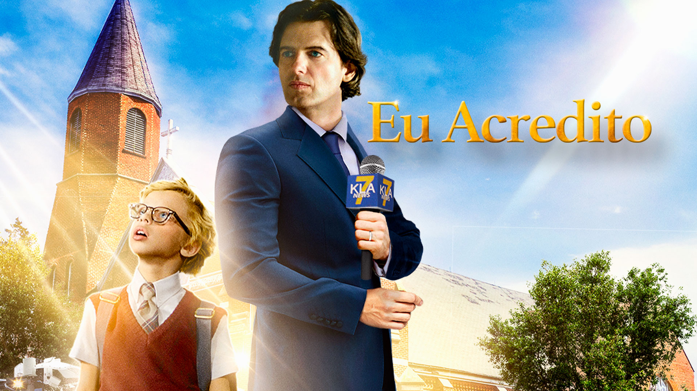

 Ate o ultimo homem
O filme fala sobre um homem cuja traumas na infacia decide fazer tudo diferente,porem,seu país esta em guerra e ele decide se alistar e enfrenta diversos desafios pela sua decisão que diante da sociedade e totalmente sem sentido,porem em tudo a fé em Deus o sustenta.
 Quarto de guerra
Tudo começa quando uma mulher enfrenta desafios em seu casamento, quando tudo parecer desmoronar e sua vida esta em completa desordem, por acaso do destino uma senhora experiente no assunto decide a ajudar com o problemas que esta enfrentando, nisso ela descobre que nao nada mais poderoso que a oração assim em sua vida acontece algo extraordinario.
 The chosen
Essa e uma serie que conta sobre como era a vida daqueles que foram escolhidos por Deus, e sua jornada na fé, sobre os milagres feito por Jesus, e sua morte e ressureição e como cada um dos escolhidos viveu após isso.
 A forja
Um jovem rebelde em sem saber sua verdadeira identidade entra em busca de um emprego,e sua nova
historia começa quando um homem de Deus o contrata e busca ensinar tudo o que aprendeu para o rapaz,
que logo se apaixona pelos seus ensinamentos e toma decisões que mudam completamente sua vida e a forma como ver o mundo.
 Eu acredito
Um garotinho extremamente inteligente, com a curiosidade aguçada, apaioxonado por livros, decide ler a Biblia tao criticada por seus pais, ele vai lendo e se aprofundando cada vez mais, ate que ele decide colocar em pratica tudo que aprendeu com seus estudos biblicos,e assim ele comeca a ver e viver coisa de tamanha graça.